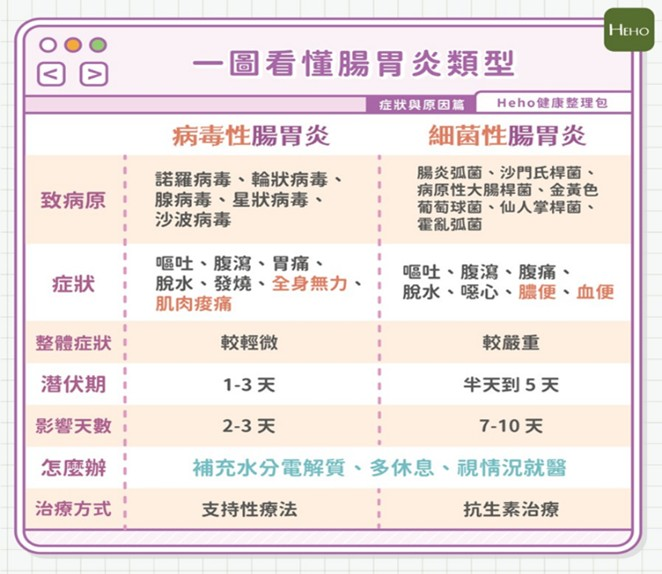
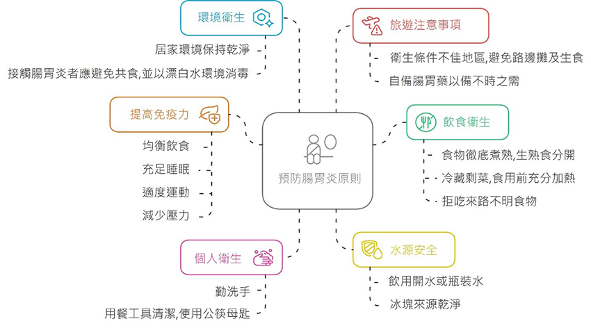
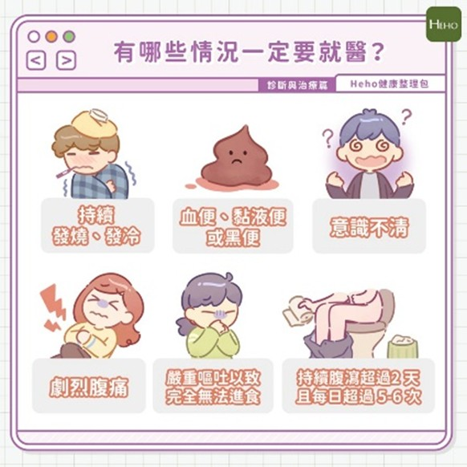

每月快訊
 月號－健康大小事
月號－健康大小事急性腸胃炎是什麼？急性腸胃炎原因、症狀、預防、照護一次看
腸胃炎算是一年四季都不缺席的常見疾病，讓人腹痛難耐、食不下嚥。雖多數可自行緩解，但若症狀持續未改善，仍應及早就醫，避免惡化。 |
||||||||||||||||||||
| 腸胃炎的原因 | ||||||||||||||||||||
腸胃炎是種常見的疾病，腸胃發炎包括胃部以及小腸大腸因細菌、病毒、食物毒素或期間的化學作用引發的發炎反應。臨床上，腸胃炎可以簡單區分為感染性腸胃炎與非感染性腸胃炎。而感染性腸胃炎依據病原不同，又可以分為「病毒性」與「細菌性」兩種腸胃炎。 |
||||||||||||||||||||
| 1.非感染性腸胃炎 | ||||||||||||||||||||
非經由外來病毒或細菌感染引發的腸胃炎，像是藥物毒性、食物毒素或暴飲暴食引發的腸胃炎。 |
||||||||||||||||||||
| 2.感染性腸胃炎 | ||||||||||||||||||||
感染性腸胃炎可分為兩種，病毒性腸胃炎與細菌性腸胃炎，這兩者多以腹瀉、嘔吐為主。病毒性會有類似流感的發燒與肌肉痠痛的症狀，但整體症狀較輕，影響天數也短。細菌性腸胃炎則症狀較為嚴重，容易解血便、產生膿便，也是食物中毒的一種。※若出現血便、膿便、高燒不退、意識模糊的狀況，最好盡快就醫。 |
||||||||||||||||||||
|  |
||||||||||||||||||||
| 預防原則 | ||||||||||||||||||||
|  | ||||||||||||||||||||
| 治療照顧 | ||||||||||||||||||||
|
||||||||||||||||||||
| 若出現下列情形時應速就醫 | ||||||||||||||||||||
|  | ||||||||||||||||||||
資料來源
1.又拉又吐是得了腸胃炎？分為病毒性和細菌性兩大類，症狀、原因一次詳解- Heho健康 |